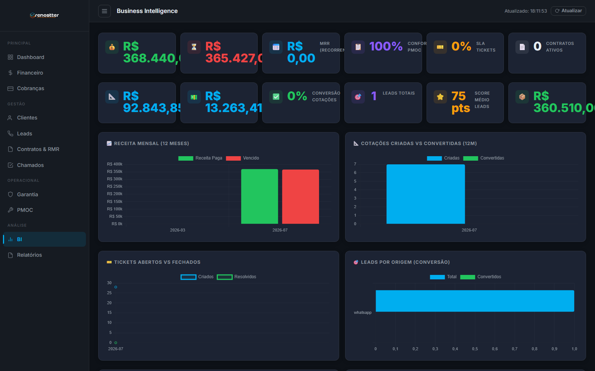
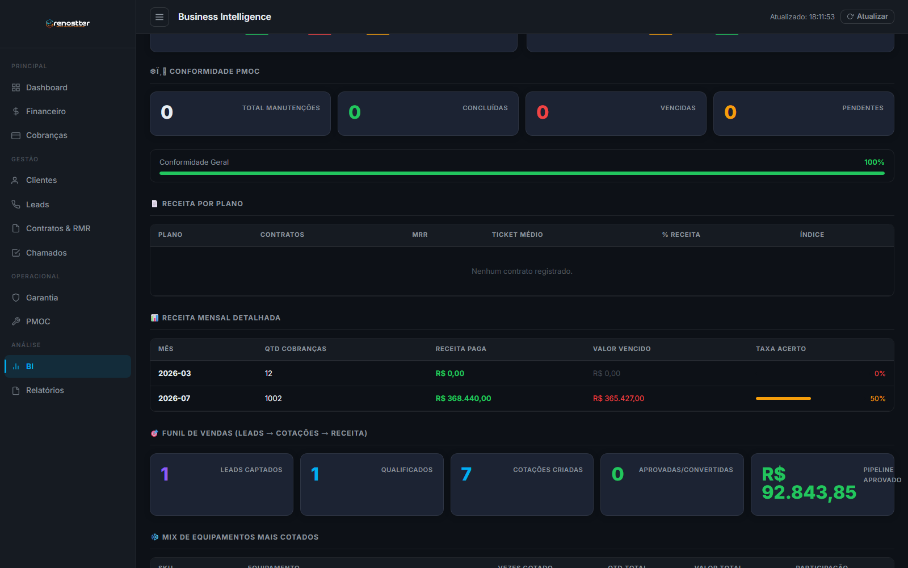

1Visão geral
O BI Dashboard é o cockpit do Renostter CRM. Consolida 12 KPIs de 8 módulos diferentes (cobrança, contratos, PMOC, chamados, leads, cotações, estoque, RMR) em uma única tela. Atualiza automaticamente a cada 5 minutos.
O que ele NÃO é
- Não é um sistema de BI corporativo (Power BI, Tableau) — é um dashboard operacional
- Não tem drill-down (clique não abre detalhes)
O que ele é
- Foto executiva do negócio em tempo real
- Detector de problemas (SLA vencendo, churn subindo, estoque crítico)
- Acompanhamento de metas (receita, conversão, ticket médio, conformidade)
- Comparativo temporal (deltas MoM em 4 KPIs principais)
Quem usa
- Diretoria / Sócios — visão macro, tomada de decisão estratégica
- Gerente comercial — acompanha funil e metas de venda
- Gerente de operações — monitora SLA, PMOC, chamados
- Financeiro — MRR, inadimplência, fluxo de caixa
O BI atualiza sozinho a cada 5 minutos. Para forçar refresh manual, clique no botão Atualizar no canto superior direito. Útil após cadastrar um lead novo ou aprovar uma cotação — você vê o impacto imediato.

2Filtro de período novo
No topo do dashboard (canto superior direito) tem um seletor de 4 botões que alternam a janela de análise de todos os módulos de uma vez:
| Botão | Janela | Uso típico |
|---|---|---|
7d | Últimos 7 dias | Acompanhamento diário / semanal |
30d | Últimos 30 dias | Análise mensal (default pra operação) |
90d | Últimos 90 dias | Visão trimestral |
12m | Últimos 12 meses | Default · visão anual estratégica |
Como funciona: todos os KPIs, gráficos, funil, mix, top clientes e ranking de técnicos recalculam automaticamente. O botão ativo fica destacado em azul. As labels dos KPIs também mudam (ex: "Receita Recebida (7 dias)"). PMOC e Estoque não são filtrados (são snapshot atual, não histórico).
Deltas MoM (Month-over-Month)
Cada KPI principal mostra um badge de delta comparando o período atual com o período anterior equivalente (mesmo tamanho):
- 🟢 ▲ +X% (verde): crescimento — bom pra receita, leads, chamados resolvidos
- 🔴 ▼ -X% (vermelho): queda — investigar
- ⚪ – (cinza): sem período anterior pra comparar (ex: lead criado ontem, sem 7 dias anteriores)
KPI → Delta exibido:
- Receita Recebida → ▲/▼ % vs período anterior
- SLA Tickets → ▲/▼ % chamados criados
- Pipeline Cotações → ▲/▼ % cotações criadas
- Leads Captados → ▲/▼ % leads criados
Exemplo real: se você tá em 7d e o badge diz "▼ -100%" em Receita, significa que a receita caiu 100% vs os 7 dias anteriores — investigar.
3Os 12 KPIs + deltas MoM
Os KPIs estão organizados em 2 fileiras de 6 cards, cada um com cor semântica. A 1ª fileira mostra indicadores operacionais clássicos. A 2ª fileira mostra pipeline e estoque.
2.1 KPIs Financeiro / Cobrança (fileira 1)
💰 Receita Recebida (12m)
Cor: verde · Fonte: cobrancas · Janela: últimos 12 meses
Soma de todas as cobranças com status PAID nos últimos 12 meses. É o faturamento real da empresa.
• Compare mês a mês (gráfico "Receita Mensal") para ver tendência
• Queda > 10% em 2 meses consecutivos = alerta vermelho
• Concentração: se 1 cliente = > 30% da receita, é dependência perigosa
⏳ Valor Vencido
Cor: vermelho · Fonte: cobrancas
Soma das cobranças com status OVERDUE (vencidas e não pagas). É a inadimplência acumulada.
• < 5% da receita = saudável
• 5-10% = atenção (ligar para cliente)
• > 10% = problema sério (revisar política de crédito)
📅 MRR (Receita Mensal Recorrente)
Cor: azul · Fonte: contratos
Soma do valor mensal de todos os contratos ativos. Veja detalhes completos no Guia de Contratos.
📋 Conformidade PMOC
Cor: roxo · Fonte: manutencoes_preventivas
Percentual de manutenções preventivas concluídas no prazo. Veja detalhes no Guia de PMOC.
🎫 SLA Tickets
Cor: laranja · Fonte: chamados
Percentual de chamados resolvidos dentro do SLA. Veja detalhes no Guia de Chamados.
📄 Contratos Ativos
Cor: cinza · Fonte: contratos
Total de contratos com status ativo. Use para acompanhar crescimento de base.
2.2 KPIs de Vendas / Pipeline (fileira 2)
📐 Pipeline Cotações (12m)
Cor: azul · Fonte: cotacoes
Soma do custo_total de todas as cotações criadas nos últimos 12 meses (todos os status). É o valor potencial em negociação.
💵 Ticket Médio Cotação
Cor: azul · Fonte: cotacoes
Média de custo_total das cotações dos últimos 12 meses. Use para comparar com ticket médio de contrato (alinhamento de preços).
✅ Conversão Cotações
Cor: verde · Fonte: cotacoes
Percentual de cotações com status aprovada ou convertida sobre o total. Meta saudável: > 30%.
• Excelente: > 40%
• Saudável: 25-40%
• Preocupante: < 15% (revisar qualidade das cotações ou follow-up)
2.3 KPIs de Leads / Estoque (fileira 2)
🎯 Leads Totais
Cor: roxo · Fonte: leads
Total de leads no sistema (todos os status). Veja Guia de Leads.
⭐ Score Médio Leads
Cor: laranja · Fonte: leads
Média do score (0-100) de todos os leads. Use como termômetro de qualidade da captação.
Meta: > 50 (morno) indica que leads têm fit razoável.
📦 Valor em Estoque
Cor: verde · Fonte: inventory
Soma de preco_venda × estoque_atual de todos os itens ativos. É o capital parado em estoque (a preço de venda).
Se Valor em Estoque / MRR > 3, você tem mais capital parado em peças do que gera de receita mensal. Considere reduzir SKUs de baixa rotação ou fazer promoção.
4Os 6 charts
3.1 Receita Mensal (12 meses) — barras duplas
Verde: receita paga · Vermelho: valor vencido. Mostra o quanto entrou vs o quanto ficou devendo mês a mês.
3.2 Cotações Criadas vs Convertidas (12m) — barras
Azul: criadas · Verde: convertidas (aprovadas + convertidas em contrato). Se a barra verde está sempre pequena, é gargalo no fechamento.
3.3 Tickets Abertos vs Fechados — linhas com área
Tendência temporal. Se a linha de "criados" sobe mas "resolvidos" fica estagnada, backlog está crescendo.
3.4 Leads por Origem (conversão) — barras horizontais
Para cada canal (whatsapp, site, evento, etc): azul = total, verde = convertidos. Canal com mais convertidos = onde investir marketing.
3.5 Status das Cobranças — donut
Distribuição de valores: recebido (verde), vencido (vermelho), pendente (amarelo).
3.6 Status dos Tickets — donut
Em aberto (amarelo) vs fechados (verde). Se donut for 100% amarelo, equipe técnica sobrecarregada.

5Funil de Vendas
Logo abaixo dos KPIs, há um card com 5 métricas em linha que mostram o caminho do lead até o cliente:
| Etapa | O que mostra | Interpretação |
|---|---|---|
| 1. Leads Captados | Total de leads no sistema | Volume da captação |
| 2. Qualificados | Leads com score ≥ 60 ou marcados manualmente | Qualidade da captação |
| 3. Cotações Criadas | Total de cotações (12m) | Produtividade do vendedor |
| 4. Aprovadas/Convertidas | Cotações ganhas | Taxa de fechamento |
| 5. Pipeline Aprovado | Soma do valor das cotações ganhas | Receita garantida no curto prazo |
Use para diagnosticar gargalos: "temos 5 leads qualificados mas só 2 cotações" = problema de produtividade do vendedor, não de captação.
6Mix de Equipamentos Mais Cotados
Tabela com os 10 SKUs que mais aparecem em cotações, com ranking de vezes cotado, quantidade total, valor e % de participação.
SKUs no topo da lista = comprar mais (alta demanda). SKUs no final da lista = avaliar descontinuar. Compare com a margem de cada um (não confundir mais cotado com mais rentável).
Leads por Origem (no chart + na KPI)
O BI mostra leads agrupados por canal. Origem com mais convertidos = onde investir marketing. Compare com CPL (custo por lead) de cada canal para calcular ROI real.
7Top Clientes (novo) 🏆 novo
Tabela ranqueada dos 10 clientes que mais geraram receita paga no período selecionado. Mostra também cobranças, valor vencido, chamados e status (Em dia / ⚠ vencido).
| Coluna | O que mostra |
|---|---|
| # | Posição no ranking (🥇🥈🥉 medalhas) |
| Cliente | Nome do cliente |
| Cobranças | Qtd de cobranças geradas no período |
| Receita Paga | Soma de valores com status PAID |
| Vencido | Soma de cobranças vencidas (negativo pro cliente) |
| Chamados | Qtd de chamados abertos no período |
| Status | Badge verde "Em dia" ou vermelho com valor |
Clientes nos top 3 merecem tratamento VIP. Cliente com receita alta e valor vencido = oportunidade de cobrança ativa (ligar, negociar). Use para priorizar a lista de follow-up comercial.
Separe em 3 grupos — VIP (top 3), Ativos (4-10), Dormentes (sem receita no período). Cada um merece cadência de contato diferente.
8Performance Técnicos (novo) 🛠️ novo
Ranking dos técnicos ativos com mais chamados no período. Mostra total, resolvidos, em aberto, taxa de resolução e barra visual de progresso.
| Coluna | O que mostra |
|---|---|
| # | Posição no ranking |
| Técnico | Nome do técnico |
| Total | Qtd de chamados atribuídos no período |
| Resolvidos | Status Resolvido ou Fechado |
| Em Aberto | Status diferente de resolvido/fechado/cancelado |
| Taxa Resolução | % resolvidos/total (verde ≥80%, laranja ≥50%, vermelho <50%) |
| Barra | Visual da taxa |
Técnico com alta taxa de resolução = eficiente, considere bonificar. Técnico com muitos chamados mas baixa taxa = sobrecarregado ou com gargalo de conhecimento. Poucos chamados + alta taxa = capacidade ociosa, atribuir mais serviço.
Use essa tabela na conversa mensal. Não é pra punir, é pra entender — técnico com taxa baixa pode estar com casos complexos demais (rebalancear) ou precisando de treinamento.
9Como ler o BI (workflow recomendado)
Sugestão de leitura diária (5-10 min):
- Topo (KPI Row 1) — Receita subiu? Inadimplência controlada? MRR crescendo? (olhe o delta MoM 🟢🔴)
- Seletor de período — comece com 7d pra ver o agora, depois 30d/12m pra ver tendência
- Topo (KPI Row 2) — Pipeline de cotações saudável? Estoque crítico? Leads crescendo?
- Charts superiores — Receita mensal em tendência de alta?
- Funil de Vendas — Gargalo em alguma etapa?
- PMOC + Tickets — SLA e conformidade em alta?
- Mix de equipamentos — Top 3 dominam o portfólio?
- Top Clientes 🏆 — Quem são os VIPs? Algum com valor vencido alto?
- Performance Técnicos 🛠️ — Equipe equilibrada? Algum sobrecarregado?
Toda segunda-feira, abra o BI em reunião de 30 min com a equipe. Cada um fala 1 número: "essa semana o MRR subiu 2% porque fechamos o cliente X". A cultura de dados começa com ritual.
10API reference
O BI consome 1 endpoint principal:
GET /api/bi/overview
Query params:
period(opcional):7d|30d|90d|12m(default12m)
Retorna o snapshot completo do BI em JSON, com 17 chaves (a partir de v1.1): cobrancas, pmoc, rmr, tickets, cotacoes, leads, estoque, deltas, topClientes, tecnicoPerformance, monthlyRevenue, ticketsTrend, cotacoesTrend, mixEquipamentos, leadsPorOrigem, period.
{
"success": true,
"data": {
"cobrancas": { "totalRecebido": 368440, "totalVencido": 365427, ... },
"cotacoes": { "total": 7, "valorTotal": 92843.85, "taxaConversao": 0 },
"leads": { "total": 1, "scoreMedio": 75 },
"mixEquipamentos": [{ "sku": "AC-LG-30K", "vezes_cotado": 6, "valor_total": 43794 }],
...
}
}O frontend faz fetch('/api/bi/overview') a cada 5 minutos (configurável em setInterval(loadAll, 300000)).
• README geral · Cotação · PMOC
• Contratos & RMR · Leads · Chamados